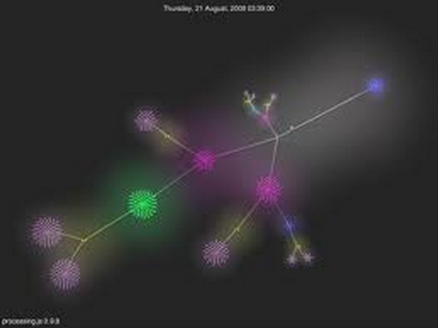

Simple Way for Neo4j Visualization
Ramazan FIRIN
Press Spacebar or Tab To Get Started
Agenda
Why Visualization?
How Visualization?
Very simple way for Neo4j visulation
Why Visulation?
To understand relationships
To capture knowledge from graph
To see, what you have been missing
For more beatiful view
How Visulation? - Gephi
How Visulation? - Sigma.js
How Visulation? - Processing.js

How Visulation? - D3.js
Perfect Blog for visulation
We need Ruby?
All samples on internet need ruby..
We really need it?....
Which component we need?
An html page.
And a datasource..(neo4j)
Which component we need for html?
A graph library to draw graph
A library to pull data from server by ajax (jquery is perfect)
Which properties we need for visulation?
Properties of node
Relations of nodes
Properties of relationship
If you have id of node,you have everything
"outgoing_relationships": "http://localhost:7474/db/data/node/284/relationships/out",
"property" : "http://localhost:7474/db/data/node/284/properties/{key}",
"all_relationships" : "http://localhost:7474/db/data/node/284/relationships/all",
""properties" : "http://localhost:7474/db/data/node/284/properties",
"incoming_relationships« : "http://localhost:7474/db/data/node/284/relationships/in",
""data" : { "properties-returnCodes" : "0, 9998, 9999",
Solution : Vivagraph.js
Simple
Good examples
Opensource
https://github.com/anvaka/VivaGraphJS
Sample code… Show graph
Sample Code - Draw Node..
Sample Code - getOutRelation..

Sample Code - getAllProperties..
Output
https://github.com/ramazanfirin/neo4visulationVivagraph/
THANKS